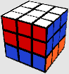

Rubik's Cube Move Notations
In order to convey a certain turn or a sequence of turns around the cube through writing, there are certain agreed key letters that specify exactly what move should be made: There are 6 different letters for turning the Rubik's cube, each for the 6 faces of the Rubik's cube to be turned:- F (front): the face facing the solver.
- B (back): the back face.
- R (right): the right face.
- L (left): the left face.
- U (up): the upper face.
- D (down): the face opposite to the upper face.
The letter means turning a single turn, (90°), clockwise, the corresponding face.
Letter followed by an apostrophe mark (') (known as "prime") means turning the corresponding face a single turn, (90°), counter-clockwise.
Letter followed by "2" means turning the corresponding face 2 single turns (180°). The direction of the turning does not matter here. (However sometimes notations such R2' do appear – mostly for speedcubing reasons, to suggest the speedy and flowing way to execute an algorithm)

U
R

F

D
L
B
U'
R'
F'

D'
D'
L'
B'

U2

R2

F2
D2
L2
B2
These notation marks will always be in Capital letters. The reason for that is that there are different meanings for small letters:
Double Layer Turns
A small letter means turning the face along with its corresponding middle layer, making it a double layer turn. The reason for doing such moves is that it can reduce the need of cube rotations (For example: l is equal for doing just R and x' - which is a cube rotation mark, explanation ahead). It is also accepted to use a capital letter + w instead of small letter (For example: Rw; it is identical to r). Small letters can be followed by a prime ('), or 2 just like the regular turns and means the same.
u
r
f

d

l

b
u'
r'
f'
d'
l'
b'
Middle Layer Turns
There are 3 different middle layer possible turns in the Rubiks cube, presented by letters (Capital only). Only 1 out of the 3 is popular in common algorithms, while the other 2 are rarely used. Still here are the notations:- M (middle): the middle layer parallel to the R & L faces.
- E (equator): the middle layer parallel to the U & D faces.
- S (side): the middle layer parallel to the F & B faces.
The middle layer turns can be followed by a prime ('), or 2, just like the regular turns. Middle layer turns are always written in capital letters.
M
M'

E
E'

S
S'
Cube Rotations
These are not actual turns, and is meant to instruct a rotation of whole the cube. Sometimes making a cube rotation allows executing much more convenient turns, like turning the R face, instead of the B face. There are 3 possible axes to rotate the cube on: The X, Y & Z axes. Just like in math. Those are also the letters used for these rotations. Best way to remember the rotations is just thinking about a 3D function graph:- x : rotating the cube on the X axis. (R & L faces remain intact)
- y : rotating the cube on the Y axis. (U & D faces remain intact)
- z : rotating the cube on the Z axis. (F & B faces remain intact)
Cube rotations usually written as small letters, but it doesn't have a meaning and they could possibly by written as capital letters – same meaning.
Cube rotations can be followed by a prime (') meaning rotating the cube a quarter rotation (90°) on the corresponding axis counter-clockwise, or followed by 2 which means rotating the cube 180° on the axis.

x
x'
y
y'

z
z'
Tip: If you're having difficulties in finding the right CW/C-CW direction of a face (like B or D faces for example), rotate temporarily the cube so that face will become the F face which is the easiest face to determine the CW/CCW direction. Just image a clock on the face and think where the hand would go to)
A sequence of turns in a row is represented by a sequence of letters, and called an algorithm.